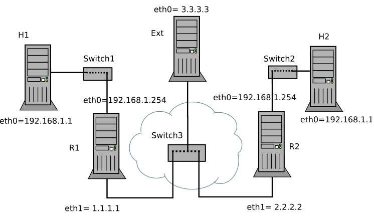

Ip header NAT, 24/10/22 (t)
Info
Appunti lezione 2020-10-26 dall'archivio telegram.
Table of Contents
1 Formato del Datagram IP
- Vers: indiica la versione del protocollo usato. IPv4/IPv6;
- Hlen: indica la lunghezza dell'header.
- Service type: specifica delle particolari politiche di
inoltro per un determinato pacchetto.
- Precedence \(\rightarrow\) speicifica l'importanza del datagram;
- D(delay) \(\rightarrow\) basso ritardo;
- T(throughput) \(\rightarrow\) alto throughput;
- R(reliability) \(\rightarrow\) alta affidabilità;
Spesso i router (comuni) ignorano questi pacchetti.
Solitamente i datagram IP sono di grandi dimensioni, e non riescono a entrare completamente all'interno del frame ethernet (la cui dimensione dipende a sua volta dall'M.T.U); Quando si pensa all'invio di un pacchetto, si deve pensare ad una rete con molti router e molti host: non tutti i collegamenti lavoreranno con lo stesso M.T.U, quindi sarà quasi sempre necessario frammentare i pacchetti!
- Identification: è comune a tutti i frammenti dello stesso pacchetto IP iniziale;
- Flag: specifica se questo datagramma è un frame oppure no;
- Offset: specifica qual'è la posizione del frammento rispetto al pacchetto iniziale;
- Time to Live: durata massima di un pacchetto nella rete. E' utile per eliminare pacchetti che stanno occupando la rete inutilmente per errori di inoltro. Non è un valore in secondi:, è un valore numerico intero, solitamente 64 o 128. Ogni volta che un router inoltra il pacchetto, il time to live viene decrementato di 1.
- Protocol: indica quale protocollo applicativo può usare i dati contenuti nel datagram.
- Checksum: serve per l'individuazione di anomalie durante
la
trasmissione.
2 Natting
Gli indirizzi IP in internet sono in numero limitato, e non bastano a coprire tutte le reti locali nel mondo. Per risolvere questo problema esistono diversi approcci:
- Indirizzamenti dinamici: ossia una
condivisionedi indirzzi IP pubblici. Un'indirizzo IP pubblico di un host potrebbe essere usato da un'altro host nel momento in cui il primo è spento oppure scollegato. - NAT (
Network Address translation)
- Router di bordo: router di una rete locale connesso con internet, tramite un ISP(internet service provider). E' definito "di bordo" perchè delimita il confine della rete locale.
In una rete locale, non tutti gli host devono avere necessariamente
un'indirizzo pubblico, basta che lo abbia il router di bordo.
Gli altri host possono semplicemente usare degli indirzzi IP
privati, o non routable, presi da questa lista \(\downarrow\)
Il natting è quindi il processo di traduzione degli indirizzi privati in indirizzi pubblici
associati al router connesso a internet. In questo modo, ad esempio,
tutti gli host connessi in una rete locale possono navigare in internet
sfruttando l'unico indirizzo pubblico del router.
Normalmente è compito del server dhcp assegnare gli indirizzi
locali agli host connessi alla rete, ma può essere fatto anche
manualmente (come abbiamo visto con marrionet).
Esistono principalmente due approcci di traduzione degli indirizzi
\(\downarrow\)
- Binding dinamico: il router gestisce automaticamente
la traduzione degl indirizzi, si usa quando all'interno
della rete locale ho dei
clientche non devono erogare servizi. - Binding statico: si usa quando nella rete locale
è presente un
serverche deve erogare servizi: in questo caso si dice al router di cambiare l'indirizzo IP destinazione dei pacchetti in arrivo con l'indirizzo IP locale del server! Questa operazione è anche detta port forwarding;
Il natting può essere applicato più volte durante l'intero percorso di un pacchetto, quindi questa strategia risulta particolarmente efficace e flessibile! Grazie al natting si possono collegare ""infiniti"" host ad una rete, perchè non si hanno problemi di disponibilità di indirizzi IP. Inoltre, la topologia e la configurazione della rete locale sono completamente oscurate all'esterno. Questa è un'ottima cosa per la sicurezza, ma rompe la semantica della comunicazione end to end. Il natting può dare problemi quando si usano paradigmi di comunicazione diversi da quello client-server, quindi finchè si usa internet in modo "normale" non ci sono grossi problemi.
3 Approfondimenti in presenza
- Lezione 17/11/22. Si parla principalmente della distinzione tra source natting e destination natting, per poi passare ad un'esperienza pratica in laboratorio.
3.1 Source Natting
3.1.1 Modifca del datagram IP
Il router di bordo deve agire sul datagram IP per effettuare varie
modifiche, in modo da gestire la corretta consegna dei pacchetti.
In particolare, deve modificare l'indirizzo IP sorgente
togliendo quello privato e inserendo quello pubblico.
Quando gli arriva la risposta, deve sostituire l'IP destinazione
pubblico con quello privato dello specifico host.
Il router deve quindi capire su quale flusso di pacchetti deve agire. Ovviamente il router deve modificare anche il checksum, perchè altrimenti il destinatario rileverà un errore nella trasmissione.

Quindi se il router è configurato per fare natting effettua la sostituzione in figura. Infatti se non la facesse, il pacchetto verrebbe prima o poi scartato, perchè sulla rete pubblica non possono girare pacchetti con IP privato.
Sulla via del ritorno, il router deve avere della logica per capire che quella che ha ricevuto è una risposta al pacchetto inviato prima, in modo da poter sostituire correttamente l'indirzzo IP destinazione.
3.1.2 Modifiche a livello trasporto
Per implementare la logica di trasformazione, il router deve sfruttare delle informazioni legate alle porte. In questo caso si parla di NAT con Port Address Translation, o PAT
Essenzialmente il router per ogni packet flow fa un mapping {<ip privato, porta privata> <ip pubblico, porta pubblica>}
La modifica dell'header UDP è analoga:
3.2 Destination Natting
Come fare se un'host deve contattare un server con IP privato? Il router a cui è collegato il server deve avere una regola esplicita (deve essere configurato ad hoc) in cui si specifica che ogni pacchetto con (ad esempio) l'IP 1.1.1.1 destinato alla porta 80 deve essere inoltrato all'host con IP privato 192.168.0.2 sulla porta 80. (Concetto di Binding Statico)
Ovviamente non solo l'indirizzo IP può essere modificato, ma anche la porta. Magari si sta eseguendo un server sulla porta privata x ma è esposto sulla porta pubblica 8080.
3.3 Scenario
il router ha a disposizione molti indirizzi IP pubblici.
- Con quale criterio trasformo un certo indirizzo privato in un certo indirizzo pubblico?
serve una configurazione, si creano delle regole statiche per effettuare queste trasformazioni.
Di base i router delle reti private sono configurati per fare source natting: se quindi un computer collegato al router hosta un server su una certa porta, esso non è accessibile dall'esterno! Quindi i router abilitati per fare destination mapping devono essere configurati staticamente, in modo da dirgli: "se ricevi un pacchetto che sembra destinato a te, in realtà devi trasformarlo e mandarlo a questo server."
3.4 IPtables
Tool che ci permette di implementare la logica del natting.
Il sistema operativo mette a disposizione diversi punti in cui si possono modificare i pacchetti in transito. Ad esempio, il primo si trova subito dopo l'interfaccia di ingresso, prima ancora dell'esecuzione della logica di routing. Questi punti sono chiamati hook \(\Downarrow\)
Altri termini specifici:
- Tabella: insieme di regole legate ad un particolare servizio,
come il natting. La tabella contiene diverse catene:
- Catena: insieme di regole legate ad un particolare hook. Queste regole vengono consultate sequenzialmente, secondo un preciso ordine.
Questa logica è molto diversa rispetto a quella delle regole di routing, in cui viene sempre applicata la regola più precisa.
Esistono 3 tipi di tabelle:
- Tabella filter;
- Tabella mangle: serve per manipolare NON per questioni di natting, ad esempio per modifiche al TTL o al TOS;
- Tabella
nat: per il natting. Si veda sotto \(\Downarrow\) per maggiori informazioni.
3.4.1 Tabella di Natting
Si possono usare 3 diversi tipi di catena:
- Catena di
prerouting: destination natting che abbiamo studiato fino ad ora, ossia il natting effettuato dal router. E' il tipo di catena che useremo. Viene applicata prima del routing, appena dopo che il pacchetto viene ricevuto dall'interfaccia. - Catena di output;
- Catena di postrouting;
4 LAB
4.1 Introduzione
Si crei su marrionet la topologia in figura. A volte ext verrà chiamato H5.  Alcune osservazioni:
- R2 non deve sapere dell'esistenza di H1 che ha un'indrizzo privato.
- Se H1 deve comunicare con ext, il router R1 deve modificare i pacchetti e inserire il suo indirizzo come indirizzo sorgente.
- Lo switch S3 simula un collegamento ad internet
4.2 Configurazione
4.2.1 Config iniziale
La configurazione iniziale, senza le regole di natting, è simile rispetto a quelle fatte fino ad ora. Alcune osservazioni: \(\Downarrow\)
- H1 configurato normalmente, ricordandosi di settare il gateway 192.168.1.254;
- H2 configurato in modo analogo
- R1: non verrà riportata la config completa, ma ricordarsi di usare:
iface eth1 inet static address 1.1.1.1/32
Ricordarsi anche di aggiungere le regole per raggiungere H5 (3.3.3.3) e R2(2.2.2.2) Ricordarsi di dire ad esempio ad R1 di raggiungere H5 e R2 tramite livello 2, usando eth1.
4.2.2 Source Natting
Si vuole configurare la rete in modo che sia H1 che H2 possano pingare external.
Questo significa che R1 e R2 devono modificare i pacchetti in transito.
Andiamo ad agire sul Post Routing:
- Snat Masquerade
iptables -t nat -A POSTROUTING \ -o eth1 -j MASQUERADE
- -A \(\Rightarrow\) append alla fine della catena;
- -j \(\Rightarrow\) azione che deve compiere ip tables;
- masquerade –> al pacchetto viene assegnato l'ip attualmente assegnato all'interfaccia di uscita.
- eth1: si vuole che il source natting venga applicato dall'interno verso l'esterno. Quindi semplicemente si dice di applicare il routing sull'interfaccia di uscita eht1.
- Ulteriore miglioramento \(\Downarrow\)
iptables -t nat -A POSTROUTING \ -o eth1 -s 192.168.1.0/24 -j MASQUERADE
in questo modo il router trasforma solo i pacchetti provenienti dalla rete privata 192.168.1.0
Per stampare le varie regole si usa
iptables -t nat -L -n -v
Masquerade è quindi la scelta giusta se l'interfaccia ha soltanto un indirizzo pubblico!
L'alternativa è usare SNAT \(\Downarrow\)
iptables -t nat -A POSTROUTING \ -o eth1 -s 192.168.1.0/24 -j SNAT --to-source 1.1.1.1
L'indirizzo che si specifica potrebbe non essere assegnato a nessuna interfaccia di R1. Ad esempio, se un'interfaccia ha a disposizione 2 indirizzi IP, può usarne 1 da assegnare normalmente, l'altro lo può usare per la traduzione, quindi per gestire la rete interna. (Se si vuole fare un replace invece che aggiungere la regola, si usa l'opzione -R invece che -A.)
Ovviamente in questo caso i router esterni devono essere informati di questa regola aggiuntiva. Altrimenti non saprebbero come raggiungere l'IP "riservato alle reti interne". Su external si deve aggiungere questa regola di routing:
route add -host 1.1.1.2 gw 1.1.1.1
essenzialmente in questo modo i pacchetti vengono mandati a R1: è lui il responsabile di 1.1.1.2.
Per quanto riguarda R2 il concetto è analogo:
iptables -t nat -A POSTROUTING \ -o eth1 -s 192.168.1.0/24 -j SNAT --to-source 2.2.2.2
4.2.3 Destination Natting
La domanda a cui rispondere è:
- cosa vogliamo rendere raggiungibile degli host privati?
Voglio rendere disponibile dall'esterno un servizio sulla porta 8080. Esempio \(\Downarrow\)
iptables -t nat -A PREROUTING -i eth1 -d 2.2.2.2 -p tcp --dport 8080 -j DNAT --to-destination 192.168.1.1:8080
A volte si può anche decidere di rendere un host privato completamente esposto: basta eliminare dei filtri! In questo modo rendo l'host pingabile, eliminando le regole riguardo le porte, quindi riguardo il livello 4. Infatti ping usa il protocollo ICMP, che usa il livello 3.
iptables -t nat -A PREROUTING -i eth1 -d 2.2.2.2 -j DNAT --to-destination 192.168.1.1:8080
Come ultimo passo, si vuole far hostare ad H2 un servizio con protocollo TCP. Si usa il tool netcat, con questo comando: \(\Downarrow\)
nc -nvltp 8080
- -l \(\Rightarrow\) listen;
- -t \(\Rightarrow\) tcp (posso usare -u se voglio usare udp);
- -p \(\Rightarrow\) numero di porta;
da external ci si può connettere sempre usando netcat:
nc -nvt 2.2.2.2 8080
dopo aver lanciato il comando ovviamente la connessione è full duplex, quindi non ci sono più differenze "reali" tra client e server.